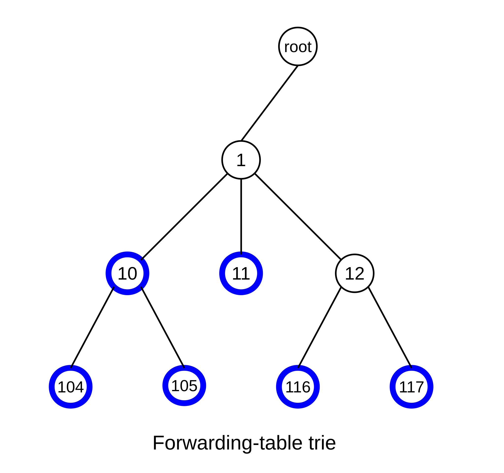

9 IP version 4¶
There are multiple LAN protocols below the IP layer and multiple transport protocols above, but IP itself stands alone. The Internet is the IP Internet. If you want to run your own LAN protocol somewhere, or if you want to run your own transport protocol, the Internet backbone will still work just fine for you. But if you want to change the IP layer, you will encounter difficulty. (Just talk to the IPv6 people, or the IP-multicasting or IP-reservations groups.)
In this chapter we discuss the original core IP protocol – known as version 4, or IPv4, and with a 32-bit address size. Most of the Internet today (2020) still uses IPv4, though IPv6 is making inroads. We will see how the IP layer enables efficient, scalable routing. In the following chapter we discuss some companion protocols: ICMP, ARP, DHCP and DNS.
Despite its ubiquity, IPv4 faces an unsettled future: the Internet has run out of new large blocks of IPv4 addresses (1.10 IP - Internet Protocol). There is therefore increasing pressure to convert to IPv6, with its 128-bit address size. Progress has been slow, however, and delaying tactics such as IPv4-address markets and NAT (9.7 Network Address Translation) – by which multiple hosts can share a single public IPv4 address – have allowed IPv4 to continue. Aside from the major change in address structure, there are relatively few differences in the routing models of IPv4 and IPv6. We will study IPv4 in this and the following chapters, and IPv6 in 11 IPv6; at points where the IPv4/IPv6 difference doesn’t much matter we will simply write “IP”.
IPv4 (and IPv6) is, in effect, a universal routing and addressing protocol. Routing and addressing are developed together; every node has an IP address and every router knows how to handle IP addresses. IP was originally seen as a way to interconnect multiple LANs, but it may make more sense now to view IP as a virtual LAN overlaying all the physical LANs.
A crucial aspect of IP is its scalability. As of 2019 the Internet had over 109 hosts; this estimate is probably low. However, at the same time the size of the largest forwarding tables was still under 106 (15.5 BGP Table Size). Ethernet, in comparison, scales poorly, as the forwarding tables need one entry for every active host.
Furthermore, IP, unlike Ethernet, offers excellent support for multiple redundant links. If the network below were an IP network, each node would communicate with each immediate neighbor via their shared direct link. If, on the other hand, this were an Ethernet network with the spanning-tree algorithm, then one of the four links would simply be disabled completely.
The IP network service model is to act like a giant LAN. That is, there are no acknowledgments; delivery is generally described as best-effort. This design choice is perhaps surprising, but it has also been quite fruitful.
If you want to provide a universal service for delivering any packet anywhere, what else do you need besides routing and addressing? Every network (LAN) needs to be able to carry any packet. The protocols spell out the use of octets (bytes), so the only possible compatibility issue is that a packet is too large for a given network. IPv4 handles this by supporting fragmentation: a network may break a too-large packet up into units it can transport successfully. While IPv4 fragmentation is inefficient and clumsy, it does guarantee that any packet can potentially be delivered to any node. (Note, however, that IPv6 has given up on universal fragmentation; 11.5.4 IPv6 Fragment Header.)
9.1 The IPv4 Header¶
The IPv4 Header needs to contain the following information:
- destination and source addresses
- indication of ipv4 versus ipv6
- a Time To Live (TTL) value, to prevent infinite routing loops
- a field indicating what comes next in the packet (eg TCP v UDP)
- fields supporting fragmentation and reassembly.
The header is organized as a series of 32-bit words as follows:
The IPv4 header, and basics of IPv4 protocol operation, were originally defined in RFC 791; some minor changes have since occurred. Most of these changes were documented in RFC 1122, though the DS field was defined in RFC 2474 and the ECN bits were first proposed in RFC 2481.
The Version field is, for IPv4, the number 4: 0100. The IHL field represents the total IPv4 Header Length, in 32-bit words; an IPv4 header can thus be at most 15 words long. The base header takes up five words, so the IPv4 Options can consist of at most ten words. If one looks at IPv4 packets using a packet-capture tool that displays the packets in hex, the first byte will most often be 0x45.
The Differentiated Services (DS) field is used by the Differentiated Services suite to specify preferential handling for designated packets, eg those involved in VoIP or other real-time protocols. The Explicit Congestion Notification bits are there to allow routers experiencing congestion to mark packets, thus indicating to the sender that the transmission rate should be reduced. We will address these in 21.5.3 Explicit Congestion Notification (ECN). These two fields together replace the old 8-bit Type of Service field.
The Total Length field is present because an IPv4 packet may be smaller than the minimum LAN packet size (see Exercise 1) or larger than the maximum (if the IPv4 packet has been fragmented over several LAN packets. The IPv4 packet length, in other words, cannot be inferred from the LAN-level packet size. Because the Total Length field is 16 bits, the maximum IPv4 packet size is 216 bytes. This is probably much too large, even if fragmentation were not something to be avoided (though see IPv6 “jumbograms” in 11.5.1 Hop-by-Hop Options Header).
The second word of the header is devoted to fragmentation, discussed below at 9.4 Fragmentation.
The Time-to-Live (TTL) field is decremented by 1 at each router; if it reaches 0, the packet is discarded. A typical initial value is 64; it must be larger than the total number of hops in the path. In most cases, a value of 32 would work. The TTL field is there to prevent routing loops – always a serious problem should they occur – from consuming resources indefinitely. Later we will look at various IP routing-table update protocols and how they minimize the risk of routing loops; they do not, however, eliminate it. By comparison, Ethernet headers have no TTL field, but Ethernet also disallows cycles in the underlying topology.
The Protocol field contains a value to identify the contents of the packet body. A few of the more common values are
- 1: an ICMP packet, 10.4 Internet Control Message Protocol
- 4: an encapsulated IPv4 packet, 9.9.1 IP-in-IP Encapsulation
- 6: a TCP packet
- 17: a UDP packet
- 41: an encapsulated IPv6 packet, 12.6 IPv6 Connectivity via Tunneling
- 50: an Encapsulating Security Payload, 29.6 IPsec
A list of assigned protocol numbers is maintained by the IANA.
The Header Checksum field is the “Internet checksum” applied to the header only, not the body. Its only purpose is to allow the discarding of packets with corrupted headers. When the TTL value is decremented the router must update the header checksum. This can be done “algebraically” by adding a 1 in the correct place to compensate, but it is not hard simply to re-sum the 8 halfwords of the average header. The header checksum must also be updated when an IPv4 packet header is rewritten by a NAT router.
The Source and Destination Address fields contain, of course, the IPv4 addresses. These would normally be updated only by NAT firewalls.
The source-address field is supposed to be the sender’s IPv4 address, but hardly any ISP checks that traffic they send out has a source address matching one of their customers, despite the call to do so in RFC 2827. As a result, IP spoofing – the sending of IP packets with a faked source address – is straightforward. For some examples, see 18.3.1 ISNs and spoofing, and SYN flooding at 17.3 TCP Connection Establishment.
IP-address spoofing also facilitates an all-too-common IP-layer denial-of-service attack in which a server is flooded with a huge volume of traffic so as to reduce the bandwidth available to legitimate traffic to a trickle. This flooding traffic typically originates from a large number of compromised machines. Without spoofing, even a lengthy list of sources can be blocked, but, with spoofing, this becomes quite difficult.
One IPv4 option is the Record Route option, in which routers are to insert their own IPv4 address into the IPv4 header option area. Unfortunately, with only ten words available, there is not enough space to record most longer routes (but see 10.4.1 Traceroute and Time Exceeded, below). The Timestamp option is related; intermediate routers are requested to mark packets with their address and a local timestamp (to save space, the option can request only timestamps). There is room for only four ⟨address,timestamp⟩ pairs, but addresses can be prespecified; that is, the sender can include up to four IPv4 addresses and only those routers will fill in a timestamp.
Another option, now deprecated as security risk, is to support source routing. The sender would insert into the IPv4 header option area a list of IPv4 addresses; the packet would be routed to pass through each of those IPv4 addresses in turn. With strict source routing, the IPv4 addresses had to represent adjacent neighbors; no router could be used if its IPv4 address were not on the list. With loose source routing, the listed addresses did not have to represent adjacent neighbors and ordinary IPv4 routing was used to get from one listed IPv4 address to the next. Both forms are essentially never used, again for security reasons: if a packet has been source-routed, it may have been routed outside of the at-least-somewhat trusted zone of the Internet backbone.
Finally, the IPv4 header was carefully laid out with memory alignment in mind. The 4-byte address fields are aligned on 4-byte boundaries, and the 2-byte fields are aligned on 2-byte boundaries. All this was once considered important enough that incoming packets were stored following two bytes of padding at the head of their containing buffer, so the IPv4 header, starting after the 14-byte Ethernet header, would be aligned on a 4-byte boundary. Today, however, the architectures for which this sort of alignment mattered have mostly faded away; alignment is a non-issue for ARM and Intel x86 processors.
9.2 Interfaces¶
IP addresses (both IPv4 and IPv6) are, strictly speaking, assigned not to hosts or nodes, but to interfaces. In the most common case, where each node has a single LAN interface, this is a distinction without a difference. In a room full of workstations each with a single Ethernet interface eth0 (or perhaps Ethernet adapter Local Area Connection), we might as well view the IP address assigned to the interface as assigned to the workstation itself.
Each of those workstations, however, likely also has a loopback interface (at least conceptually), providing a way to deliver IP packets to other processes on the same machine. On many systems, the name “localhost” resolves to the IPv4 loopback address 127.0.0.1 (the IPv6 address ::1 is also used); see 9.3 Special Addresses. Delivering packets to the loopback interface is simply a form of interprocess communication; a functionally similar alternative is named pipes.
Loopback delivery avoids the need to use the LAN at all, or even the need to have a LAN. For simple client/server testing, it is often convenient to have both client and server on the same machine, in which case the loopback interface is a convenient (and fast) standin for a “real” network interface. On unix-based machines the loopback interface represents a genuine logical interface, commonly named lo. On Windows systems the “interface” may not represent an actual operating-system entity, but this is of practical concern only to those interested in “sniffing” all loopback traffic; packets sent to the loopback address are still delivered as expected.
Workstations often have special other interfaces as well. Most recent versions of Microsoft Windows have a Teredo Tunneling pseudo-interface and an Automatic Tunneling pseudo-interface; these are both intended (when activated) to support IPv6 connectivity when the local ISP supports only IPv4. The Teredo protocol is documented in RFC 4380.
When VPN connections are created, as in 5.1 Virtual Private Networks, each end of the logical connection typically terminates at a virtual interface (one of these is labeled tun0 in the diagram of 5.1 Virtual Private Networks). These virtual interfaces appear, to the systems involved, to be attached to a point-to-point link that leads to the other end.
When a computer hosts a virtual machine, there is almost always a virtual network to connect the host and virtual systems. The host will have a virtual interface to connect to the virtual network. The host may act as a NAT router for the virtual machine, “hiding” that virtual machine behind its own IP address, or it may act as an Ethernet switch, in which case the virtual machine will need an additional public IP address.
Routers always have at least two interfaces on two separate IP networks. Generally this means a separate IP address for each interface, though some point-to-point interfaces can be used without being assigned any IP address (9.8 Unnumbered Interfaces).
9.2.1 Multihomed hosts¶
A non-router host with multiple non-loopback network interfaces is often said to be multihomed. Many laptops, for example, have both an Ethernet interface and a Wi-Fi interface. Both of these can be used simultaneously, with different IP addresses assigned to each. On residential networks the two interfaces will often be on the same IP network (eg the same bridged Wi-Fi/Ethernet LAN); at more security-conscious sites the Ethernet and Wi-Fi interfaces are often on quite different IP networks (though see 10.2.5 ARP and multihomed hosts).
Multiple physical interfaces are not actually needed here; it is usually possible to assign multiple IP addresses to a single interface. Sometimes this is done to allow two IP networks (two distinct prefixes) to share a single physical LAN; in this case the interface would be assigned one IP address for each IP network. Other times a single interface is assigned multiple IP addresses on the same IP network; this is often done so that one physical machine can act as a server (eg a web server) for multiple distinct IP addresses corresponding to multiple distinct domain names.
Multihoming raises some issues with packets addressed to one interface, A, with IP address AIP, but which arrive via another interface, B, with IP address BIP. Strictly speaking, such arriving packets should be discarded unless the host is promoted to functioning as a router. In practice, however, the strict interpretation often causes problems; a typical user understanding is that the IP address AIP should work to reach the host even if the physical connection is to interface B. A related issue is whether the host receiving such a packet addressed to AIP on interface B is allowed to send its reply with source address AIP, even though the reply must be sent via interface B.
RFC 1122, §3.3.4, defines two alternatives here:
- The Strong End-System model: IP addresses – incoming and outbound – must match the physical interface.
- The Weak End-System model: A match is not required: interface B can accept packets addressed to AIP, and send packets with source address AIP.
Linux systems generally use the weak model by default. See also 10.2.5 ARP and multihomed hosts.
While it is important to be at least vaguely aware of the special cases that multihoming presents, we emphasize again that in most ordinary contexts each end-user workstation has one IP address that corresponds to a LAN connection.
9.3 Special Addresses¶
A few IPv4 addresses represent special cases.
While the standard IPv4 loopback address is 127.0.0.1, any IPv4 address beginning with 127 can serve as a loopback address. Logically they all represent the current host. Most hosts are configured to resolve the name “localhost” to 127.0.0.1. However, any loopback address – eg 127.255.37.59 – should work, eg with ping. For an example using 127.0.1.0, see 10.1 DNS.
Private addresses are IPv4 addresses intended only for site internal use, eg either behind a NAT firewall or intended to have no Internet connectivity at all. If a packet shows up at any non-private router (eg at an ISP router), with a private IPv4 address as either source or destination address, the packet should be dropped. Three standard private-address blocks have been defined:
- 10.0.0.0/8
- 172.16.0.0/12
- 192.168.0.0/16
The last block is the one from which addresses are most commonly allocated by DHCP servers (10.3.1 NAT, DHCP and the Small Office) built into NAT routers.
There are subtle issues with private addresses. First of all, when organizations merge, wholesale private-address renumbering is usually necessary. Second, suppose Alice uses 10.0.0.0/8 for her home network, where her laptop is 10.0.0.23. Suppose also that Alice connects via a VPN to work, and her server at work is also 10.0.0.23. Connection between laptop and server will then fail. It would also fail if the server were 10.0.0.24, as Alice’s laptop will think that should be on the local subnet, and it is not. There are other potential conflicts as well. Perhaps the main reason these problems are not worse than they are is that most home networks use 192.168.0.0/16, and most corporate networks use one of the other two private-address blocks.
There is an additional problem with mobile-phone networks. Most phones get a mobile-network IPv4 address from the carrier, and also a Wi-Fi IPv4 address from whatever Wi-Fi network the phone owner is currently connected to. If the carrier uses any of the above private-address blocks, there is a fair chance that, at some Wi-Fi-providing establishment, someone’s carrier-assigned mobile IPv4 address will conflict with their Wi-Fi address. The addresses may even be the same. Because of this, RFC 6598 has established the following special address block for mobile-device carriers, known as a shared-address block:
- 100.64.0.0/10
It is exactly like a private-address block, except no one is to use it except mobile-device carriers.
Broadcast addresses are a special form of IPv4 address intended to be used in conjunction with LAN-layer broadcast. The most common forms are “broadcast to this network”, consisting of all 1-bits, and “broadcast to network D”, consisting of D’s network-address bits followed by all 1-bits for the host bits. If you try to send a packet to the broadcast address of a remote network D, the odds are that some router involved will refuse to forward it, and the odds are even higher that, once the packet arrives at a router actually on network D, that router will refuse to broadcast it. Even addressing a broadcast to one’s own network will fail if the underlying LAN does not support LAN-level broadcast (eg ATM).
The highly influential early Unix implementation Berkeley 4.2 BSD used 0-bits for the broadcast bits, instead of 1’s. As a result, to this day host bits cannot be all 1-bits or all 0-bits in order to avoid confusion with the IPv4 broadcast address. One consequence of this is that a Class C network has 254 usable host addresses, not 256.
9.3.1 Multicast addresses¶
Finally, IPv4 multicast addresses remain as the last remnant of the Class A/B/C strategy: multicast addresses are Class D, with first byte beginning 1110 (meaning that the first byte is, in decimal, 224-239). Multicasting means delivering to a specified set of addresses, preferably by some mechanism more efficient than sending to each address individually. A reasonable goal of multicast would be that no more than one copy of the multicast packet traverses any given link.
Support for IPv4 multicast requires considerable participation by the backbone routers involved. For example, if hosts A, B and C each connect to different interfaces of router R1, and A wishes to send a multicast packet to B and C, then it is up to R1 to receive the packet, figure out that B and C are the intended recipients, and forward the packet twice, once for B’s interface and once for C’s. R1 must also keep track of what hosts have joined the multicast group and what hosts have left. Due to this degree of router participation, backbone router support for multicasting has not been entirely forthcoming. A discussion of IPv4 multicasting appears in 25 Quality of Service.
9.4 Fragmentation¶
If you are trying to interconnect two LANs (as IP does), what else might be needed besides Routing and Addressing? IPv4 (and IPv6) explicitly assumes all packets are composed on 8-bit bytes (something not universally true in the early days of IP; to this day the RFCs refer to “octets” to emphasize this requirement). IP also defines bit-order within a byte, and it is left to the networking hardware to translate properly. Neither byte size nor bit order, therefore, can interfere with packet forwarding.
There is one more feature IPv4 must provide, however, if the goal is universal connectivity: it must accommodate networks for which the maximum packet size, or Maximum Transfer Unit, MTU, is smaller than the packet that needs forwarding. Otherwise, if we were using IPv4 to join Token Ring (MTU = 4kB, at least originally) to Ethernet (MTU = 1500B), the token-ring packets might be too large to deliver to the Ethernet side, or to traverse an Ethernet backbone en route to another Token Ring. (Token Ring, in its day, did commonly offer a configuration option to allow Ethernet interoperability.)
So, IPv4 must support fragmentation, and thus also reassembly. There are two potential strategies here: per-link fragmentation and reassembly, where the reassembly is done at the opposite end of the link (as in ATM), and path fragmentation and reassembly, where reassembly is done at the far end of the path. The latter approach is what is taken by IPv4, partly because intermediate routers are too busy to do reassembly (this is as true today as it was in 1981 when RFC 791 was published), partly because there is no absolute guarantee that all fragments will go to the same next-hop router, and partly because IPv4 fragmentation has always been seen as the strategy of last resort.
An IPv4 sender is supposed to use a different value for the IDENT field for different packets, at least up until the field wraps around. When an IPv4 datagram is fragmented, the fragments keep the same IDENT field, so this field in effect indicates which fragments belong to the same packet.
After fragmentation, the Fragment Offset field marks the start position of the data portion of this fragment within the data portion of the original IPv4 packet. Note that the start position can be a number up to 216, the maximum IPv4 packet length, but the FragOffset field has only 13 bits. This is handled by requiring the data portions of fragments to have sizes a multiple of 8 (three bits), and left-shifting the FragOffset value by 3 bits before using it.
As an example, consider the following network, where MTUs are excluding the LAN header:
Suppose A addresses a packet of 1500 bytes to B, and sends it via the LAN to the first router R1. The packet contains 20 bytes of IPv4 header and 1480 of data.
R1 fragments the original packet into two packets of sizes 20+976 = 996 and 20+504=524. Having 980 bytes of payload in the first fragment would fit, but violates the rule that the sizes of the data portions be divisible by 8. The first fragment packet has FragOffset = 0; the second has FragOffset = 976.
R2 refragments the first fragment into three packets as follows:
- first: size = 20+376=396, FragOffset = 0
- second: size = 20+376=396, FragOffset = 376
- third: size = 20+224 = 244 (note 376+376+224=976), FragOffset = 752.
R2 refragments the second fragment into two:
- first: size = 20+376 = 396, FragOffset = 976+0 = 976
- second: size = 20+128 = 148, FragOffset = 976+376=1352
R3 then sends the fragments on to B, without reassembly.
Note that it would have been slightly more efficient to have fragmented into four fragments of sizes 376, 376, 376, and 352 in the beginning. Note also that the packet format is designed to handle fragments of different sizes easily. The algorithm is based on multiple fragmentation with reassembly only at the final destination.
Each fragment has its IPv4-header Total Length field set to the length of that fragment.
We have not yet discussed the three flag bits. The first bit is reserved, and must be 0. The second bit is the Don’t Fragment, or DF, bit. If it is set to 1 by the sender then a router must not fragment the packet and must drop it instead; see 18.6 Path MTU Discovery for an application of this. The third bit, the More Fragments bit, is set to 1 for all fragments except the final one (this bit is thus set to 0 if no fragmentation has occurred). The third bit tells the receiver where the fragments stop.
The receiver must take the arriving fragments and reassemble them into a whole packet. The fragments may not arrive in order – unlike in ATM networks – and may have unrelated packets interspersed. The reassembler must identify when different arriving packets are fragments of the same original, and must figure out how to reassemble the fragments in the correct order; both these problems were essentially trivial for ATM.
Fragments are considered to belong to the same packet if they have the same IDENT field and also the same source and destination addresses and same protocol.
As all fragment sizes are a multiple of 8 bytes, the receiver can keep track of whether all fragments have been received with a bitmap in which each bit represents one 8-byte fragment chunk. A 1 kB packet could have up to 128 such chunks; the bitmap would thus be 16 bytes.
If a fragment arrives that is part of a new (and fragmented) packet, a buffer is allocated. While the receiver cannot know the final size of the buffer, it can usually make a reasonable guess. Because of the FragOffset field, the fragment can then be stored in the buffer in the appropriate position. A new bitmap is also allocated, and a reassembly timer is started.
As subsequent fragments arrive, not necessarily in order, they too can be placed in the proper buffer in the proper position, and the appropriate bits in the bitmap are set to 1.
If the bitmap shows that all fragments have arrived, the packet is sent on up as a completed IPv4 packet. If, on the other hand, the reassembly timer expires, then all the pieces received so far are discarded.
TCP connections usually engage in Path MTU Discovery, and figure out the largest packet size they can send that will not entail fragmentation (18.6 Path MTU Discovery). But it is not unusual, for example, for UDP protocols to use fragmentation, especially over the short haul. In the Network File System (NFS) protocol, for example, UDP is used to carry 8 kB disk blocks. These are often sent as a single 8+ kB IPv4 packet, fragmented over Ethernet to five full packets and a fraction. Fragmentation works reasonably well here because most of the time the packets do not leave the Ethernet they started on. Note that this is an example of fragmentation done by the sender, not by an intermediate router.
Finally, any given IP link may provide its own link-layer fragmentation and reassembly; we saw in 5.5.1 ATM Segmentation and Reassembly that ATM does just this. Such link-layer mechanisms are, however, generally invisible to the IP layer.
9.5 The Classless IP Delivery Algorithm¶
Recall from Chapter 1 that any IPv4 address can be divided into a net portion IPnet and a host portion IPhost; the division point was determined by whether the IPv4 address was a Class A, a Class B, or a Class C. We also indicated in Chapter 1 that the division point was not always so clear-cut; we now present the delivery algorithm, for both hosts and routers, that does not assume a globally predeclared division point of the input IPv4 address into net and host portions. We will, for the time being, punt on the question of forwarding-table lookup and assume there is a lookup() method available that, when given a destination address, returns the next_hop neighbor.
Instead of class-based divisions, we will assume that each of the IPv4 addresses assigned to a node’s interfaces is configured with an associated length of the network prefix; following the slash notation of 1.10 IP - Internet Protocol, if B is an address and the prefix length is k = kB then the prefix itself is B/k. As usual, an ordinary host may have only one IP interface, while a router will always have multiple interfaces.
Let D be the given IPv4 destination address; we want to decide if D is local or nonlocal. The host or router involved may have multiple IP interfaces, but for each interface the length of the network portion of the address will be known. For each network address B/k assigned to one of the host’s interfaces, we compare the first k bits of B and D; that is, we ask if D matches B/k.
- If one of these comparisons yields a match, delivery is local; the host delivers the packet to its final destination via the LAN connected to the corresponding interface. This means looking up the LAN address of the destination, if applicable, and sending the packet to that destination via the interface.
- If there is no match, delivery is nonlocal, and the host passes D to the
lookup()routine of the forwarding table and sends to the associated next_hop (which must represent a physically connected neighbor). It is now up tolookup()routine to make any necessary determinations as to how D might be split into Dnet and Dhost; the split cannot be made outside oflookup().
The forwarding table is, abstractly, a set of network addresses – now also with lengths – each of the form B/k, with an associated next_hop destination for each. The lookup() routine will, in principle, compare D with each table entry B/k, looking for a match (that is, equality of the first k = kB bits). As with the local-delivery interfaces check above, the net/host division point (that is, k) will come from the table entry; it will not be inferred from D or from any other information borne by the packet. There is, in fact, no place in the IPv4 header to store a net/host division point, and furthermore different routers along the path may use different values of k with the same destination address D. Routers receive the prefix length /k for a destination B/k as part of the process by which they receive ⟨destination,next_hop⟩ pairs; see 13 Routing-Update Algorithms.
In 14 Large-Scale IP Routing we will see that in some cases multiple matches in the forwarding table may exist, eg 147.0.0.0/8 and 147.126.0.0/16. The longest-match rule will be introduced for such cases to pick the best match.
Here is a simple example for a router with immediate neighbors A-E:
| destination | next_hop |
|---|---|
| 10.3.0.0/16 | A |
| 10.4.1.0/24 | B |
| 10.4.2.0/24 | C |
| 10.4.3.0/24 | D |
| 10.3.37.0/24 | E |
The IPv4 addresses 10.3.67.101 and 10.3.59.131 both route to A. The addresses 10.4.1.101, 10.4.2.157 and 10.4.3.233 route to B, C and D respectively. Finally, 10.3.37.103 matches both A and E, but the E match is longer so the packet is routed that way.
The forwarding table may also contain a default entry for the next_hop, which it may return in cases when the destination D does not match any known network. We take the view here that returning such a default entry is a valid result of the routing-table lookup() operation, rather than a third option to the algorithm above; one approach is for the default entry to be the next_hop corresponding to the destination 0.0.0.0/0, which does indeed match everything (use of this would definitely require the above longest-match rule, though).
Default routes are hugely important in keeping leaf forwarding tables small. Even backbone routers sometimes expend considerable effort to keep the network address prefixes in their forwarding tables as short as possible, through consolidation.
At a site with a single ISP and with no Internet customers (that is, which is not itself an ISP for others), the top-level forwarding table usually has a single external route: its default route to its ISP. If a site has more than one ISP, however, the top-level forwarding table can expand in a hurry. For example, Internet2 is a consortium of research sites with very-high-bandwidth internal interconnections, acting as a sort of “parallel Internet”. Before Internet2, Loyola’s top-level forwarding table had the usual single external default route. After Internet2, we in effect had a second ISP and had to divide traffic between the commercial ISP and the Internet2 ISP. The default route still pointed to the commercial ISP, but Loyola’s top-level forwarding table now had to have an entry for every individual Internet2 site, so that traffic to any of these sites would be forwarded via the Internet2 ISP. See exercise 5.0.
Routers may also be configured to allow passing quality-of-service information to the lookup() method, as mentioned in Chapter 1, to support different routing paths for different kinds of traffic (eg bulk file-transfer versus real-time).
For a modest exception to the local-delivery rule described here, see below in 9.8 Unnumbered Interfaces.
9.5.1 Efficient Forwarding-Table Lookup¶
Fast implementation of the lookup() operation above is tricky, especially in the presence of destination entries that may not result in unique matches, such as 10.0.0.0/8 and 10.11.0.0/16, which both match 10.11.12.13. Straightforward hashing, in particular, is out, as the prefix-length value k is not available to the call of lookup().
The simplest approach is a trie, a form of tree in which the child nodes are labeled with bit strings; the concatenated node labels on a branch represent an address prefix. Node labels can represent single address bits or larger bit groups. A trie allows straightforward implementation of the longest-match rule by requiring that we descend in the trie until no further matches are possible.
As an example, we construct a trie for the following forwarding table:
| destination | next_hop |
|---|---|
| 1.10.0.0/16 | A |
| 1.10.104.0/24 | B |
| 1.10.105.0/24 | C |
| 1.11.0.0/16 | D |
| 1.12.116.0/24 | E |
| 1.12.117.0/24 | F |
As all the prefix lengths are multiples of 8 bits, we build the trie using bytes as node labels:

Heavy blue nodes represent matches; light nodes represent non-matches. There is one heavy node for each entry in the table above. To look up 1.10.105.213 in the trie, we view the address as a list ⟨1,10,105,213⟩. From the root, we traverse nodes 1 and 10, arriving at a heavy node representing the destination 1.10.0.0/16. However, the next element of the address list is 105, and so we continue down to child node 105, thus matching 1.10.105.0/24. There are no further child nodes, so this match is as long as possible.
A straightforward trie implementation for arbitrary prefix lengths requires single-bit node labels. However, the Luleå algorithm, [DBCP97], implements lookup with a trie of only three levels, representing address bits 0-15, 16-23 and 24-31. At the top of the trie, an array of size 216 helps determine the first child node; similar supplemental data structures assist with the child-node lookups at subsequent levels.
Finally, high-performance switches often implement the lookup() operation using content-addressable memory. IP forwarding requires the ternary form of this memory, TCAM, described in the final paragraph of 3.2.1 Switch Hardware. If A/k is an IP address prefix of length k, then A goes in the TCAM memory register, and the corresponding mask register is used to indicate that only the first k bits matter.
When an IPv4 address is presented to the TCAM for lookup, there may now be multiple matches of differing lengths. To implement the longest-match rule, we first need to make sure that, in the TCAM sequence of registers, shorter prefixes come before longer ones. The TCAM encoder circuit then converts the matching register’s position in the sequence to an address corresponding to the register, with which the rest of the routing information can be retrieved. This encoder must be designed so that it always prefers longer prefixes (higher TCAM sequence positions). A longest-match lookup can then be performed in a single memory-lookup cycle.
When backbone IPv4 routers experience acute difficulties due to growth of the forwarding table, it is often because the existing table has outgrown the space available in the TCAM hardware.
9.6 IPv4 Subnets¶
Subnets were the first step away from Class A/B/C routing: a large network (eg a class A or B) could be divided into smaller IPv4 networks called subnets. Consider, for example, a typical Class B network such as Loyola University’s (originally 147.126.0.0/16); the underlying assumption is that any packet can be delivered via the underlying LAN to any internal host. This would require a rather large LAN, and would require that a single physical LAN be used throughout the site. What if our site has more than one physical LAN? Or is really too big for one physical LAN? It did not take long for the IP world to run into this problem.
Subnets were first proposed in RFC 917, and became official with RFC 950.
Getting a separate IPv4 network prefix for each subnet is bad for routers: the backbone forwarding tables now must have an entry for every subnet instead of just for every site. What is needed is a way for a site to appear to the outside world as a single IP network, but for further IP-layer routing to be supported inside the site. This is what subnets accomplish.
Subnets introduce hierarchical routing: first we route to the primary network, then inside that site we route to the subnet, and finally the last hop delivers to the host.
Routing with subnets involves in effect moving the IPnet division line rightward. (Later, when we consider CIDR, we will see the complementary case of moving the division line to the left.) For now, observe that moving the line rightward within a site does not affect the outside world at all; outside routers are not even aware of site-internal subnetting.
In the following diagram, the outside world directs traffic addressed to 147.126.0.0/16 to the router R. Internally, however, the site is divided into subnets. The idea is that traffic from 147.126.1.0/24 to 147.126.2.0/24 is routed, not switched; the two LANs involved may not even be compatible (for example, the ovals might represent Token Ring while the lines represent Ethernet). Most of the subnets shown are of size /24, meaning that the third byte of the IPv4 address has become part of the network portion of the subnet’s address; one /20 subnet is also shown. RFC 950 would have disallowed the subnet with third byte 0, but having 0 for the subnet bits generally does work.
What we want is for the internal routing to be based on the extended network prefixes shown, while externally continuing to use only the single routing entry for 147.126.0.0/16.
To implement subnets, we divide the site’s IPv4 network into some combination of physical LANs – the subnets –, and assign each a subnet address: an IPv4 network address which has the site’s IPv4 network address as prefix. To put this more concretely, suppose the site’s IPv4 network address is A, and consists of n network bits (so the site address may be written with the slash notation as A/n); in the diagram above, A/n = 147.126.0.0/16. A subnet address is an IPv4 network address B/k such that:
- The address B/k is within the site: the first n bits of B are the same as A/n’s
- B/k extends A/n: k≥n
An example B/k in the diagram above is 147.126.1.0/24. (There is a slight simplification here in that subnet addresses do not absolutely have to be prefixes; see below.)
We now have to figure out how packets will be routed to the correct subnet. For incoming packets we could set up some proprietary protocol at the entry router to handle this. However, the more complicated situation is all those existing internal hosts that, under the class A/B/C strategy, would still believe they can deliver via the LAN to any site host, when in fact they can now only do that for hosts on their own subnet. We need a more general solution.
We proceed as follows. For each subnet address B/k, we create a subnet mask for B consisting of k 1-bits followed by enough 0-bits to make a total of 32. We then make sure that every host and router in the site knows the subnet mask for every one of its interfaces. Hosts usually find their subnet mask the same way they find their IP address (by static configuration if necessary, but more likely via DHCP, below).
Hosts and routers now apply the IP delivery algorithm of the previous section, with the proviso that, if a subnet mask for an interface is present, then the subnet mask is used to determine the number of address bits rather than the Class A/B/C mechanism. That is, we determine whether a packet addressed to destination D is deliverable locally via an interface with subnet address B/k and corresponding mask M by comparing D&M with B&M, where & represents bitwise AND; if the two match, the packet is local. This will generally involve a match of more bits than if we used the Class A/B/C strategy to determine the network portion of addresses D and B.
As stated previously, given an address D with no other context, we will not be able to determine the network/host division point in general (eg for outbound packets). However, that division point is not in fact what we need. All that is needed is a way to tell if a given destination host address D belongs to the current subnet, say B; that is, we need to compare the first k bits of D and B where k is the (known) length of B.
In the diagram above, the subnet mask for the /24 subnets would be 255.255.255.0; bitwise ANDing any IPv4 address with the mask is the same as extracting the first 24 bits of the IPv4 address, that is, the subnet portion. The mask for the /20 subnet would be 255.255.240.0 (240 in binary is 1111 0000).
In the diagram above none of the subnets overlaps or conflicts: the subnets 147.126.0.0/24 and 147.126.1.0/24 are disjoint. It takes a little more effort to realize that 147.126.16.0/20 does not overlap with the others, but note that an IPv4 address matches this network prefix only if the first four bits of the third byte are 0001, so the third byte itself ranges from decimal 32 to decimal 63 = binary 0001 1111.
Note also that if host A = 147.126.0.1 wishes to send to destination D = 147.126.1.1, and A is not subnet-aware, then delivery will fail: A will infer that the interface is a Class B, and therefore compare the first two bytes of A and D, and, finding a match, will attempt direct LAN delivery. But direct delivery is now likely impossible, as the subnets are not joined by a switch. Only with the subnet mask will A realize that its network is 147.126.0.0/24 while D’s is 147.126.1.0/24 and that these are not the same. A would still be able to send packets to its own subnet. In fact A would still be able to send packets to the outside world: it would realize that the destination in that case does not match 147.126.0.0/16 and will thus forward to its router. Hosts on other subnets would be the only unreachable ones.
Properly, the subnet address is the entire prefix, eg 147.126.65.0/24. However, it is often convenient to identify the subnet address with just those bits that represent the extension of the site IPv4-network address; we might thus say casually that the subnet address here is 65.
The class-based IP-address strategy allowed any host anywhere on the Internet to properly separate any address into its net and host portions. With subnets, this division point is now allowed to vary; for example, the address 147.126.65.48 divides into 147.126 | 65.48 outside of Loyola, but into 147.126.65 | 48 inside. This means that the net-host division is no longer an absolute property of addresses, but rather something that depends on where the packet is on its journey.
Technically, we also need the requirement that given any two subnet addresses of different, disjoint subnets, neither is a proper prefix of the other. This guarantees that if A is an IP address and B is a subnet address with mask M (so B = B&M), then A&M = B implies A does not match any other subnet. Regardless of the net/host division rules, we cannot possibly allow subnet 147.126.16.0/20 to represent one LAN while 147.126.16.0/24 represents another; the second subnet address block is a subset of the first. (We can, and sometimes do, allow the first LAN to correspond to everything in 147.126.16.0/20 that is not also in 147.126.16.0/24; this is the longest-match rule.)
The strategy above is actually a slight simplification of what the subnet mechanism actually allows: subnet address bits do not in fact have to be contiguous, and masks do not have to be a series of 1-bits followed by 0-bits. The mask can be any bit-mask; the subnet address bits are by definition those where there is a 1 in the mask bits. For example, we could at a Class-B site use the fourth byte as the subnet address, and the third byte as the host address. The subnet mask would then be 255.255.0.255. While this generality was once sometimes useful in dealing with “legacy” IPv4 addresses that could not easily be changed, life is simpler when the subnet bits precede the host bits.
9.6.1 Subnet Example¶
As an example of having different subnet masks on different interfaces, let us consider the division of a class-C network into subnets of size 70, 40, 25, and 20. The subnet addresses will of necessity have different lengths, as there is not room for four subnets each able to hold 70 hosts.
- A: size 70
- B: size 40
- C: size 25
- D: size 20
Because of the different subnet-address lengths, division of a local IPv4 address LA into net versus host on subnets cannot be done in isolation, without looking at the host bits. However, that division is not in fact what we need. All that is needed is a way to tell if the local address LA belongs to a given subnet, say B; that is, we need to compare the first n bits of LA and B, where n is the length of B’s subnet mask. We do this by comparing LA&M to B&M, where M is the mask corresponding to n. LA&M is not necessarily the same as LAnet, if LA actually belongs to one of the other subnets. However, if LA&M = B&M, then LA must belong subnet B, in which case LA&M is in fact LAnet.
We will assume that the site’s IPv4 network address is 200.0.0.0/24. The first three bytes of each subnet address must match 200.0.0. Only some of the bits of the fourth byte will be part of the subnet address, so we will switch to binary for the last byte, and use both the /n notation (for total number of subnet bits) and also add a vertical bar | to mark the separation between subnet and host.
Example: 200.0.0.10 | 00 0000 / 26
Note that this means that the 0-bit following the 1-bit in the fourth byte is “significant” in that for a subnet to match, it must match this 0-bit exactly. The remaining six 0-bits are part of the host portion.
To allocate our four subnet addresses above, we start by figuring out just how many host bits we need in each subnet. Subnet sizes are always powers of 2, so we round up the subnets to the appropriate size. For subnet A, this means we need 7 host bits to accommodate 27 = 128 hosts, and so we have a single bit in the fourth byte to devote to the subnet address. Similarly, for B we will need 6 host bits and will have 2 subnet bits, and for C and D we will need 5 host bits each and will have 8-5=3 subnet bits.
We now start choosing non-overlapping subnet addresses. We have one bit in the fourth byte to choose for A’s subnet; rather arbitrarily, let us choose this bit to be 1. This means that every other subnet address must have a 0 in the first bit position of the fourth byte, or we would have ambiguity.
Now for B’s subnet address. We have two bits to work with, and the first bit must be 0. Let us choose the second bit to be 0 as well. If the fourth byte begins 00, the packet is part of subnet B, and the subnet addresses for C and D must therefore not begin 00.
Finally, we choose subnet addresses for C and D to be 010 and 011, respectively. We thus have
| subnet | size | address bits in fourth byte | host bits in 4th byte | decimal range |
|---|---|---|---|---|
| A | 128 | 1 | 7 | 128-255 |
| B | 64 | 00 | 6 | 0-63 |
| C | 32 | 010 | 5 | 64-95 |
| D | 32 | 011 | 5 | 96-127 |
As desired, none of the subnet addresses in the third column is a prefix of any other subnet address.
The end result of all of this is that routing is now hierarchical: we route on the site IP address to get to a site, and then route on the subnet address within the site.
9.6.2 Links between subnets¶
Suppose the Loyola CS department subnet (147.126.65.0/24) and a department at some other site, we will say 147.100.100.0/24, install a private link. How does this affect routing?
Each department router would add an entry for the other subnet, routing along the private link. Traffic addressed to the other subnet would take the private link. All other traffic would go to the default router. Traffic from the remote department to 147.126.64.0/24 would take the long route, and Loyola traffic to 147.100.101.0/24 would take the long route.
How would nearby subnets at either endpoint decide whether to use the private link? Classical link-state or distance-vector theory (13 Routing-Update Algorithms) requires that they be able to compare the private-link route with the going-around-the-long-way route. But this requires a global picture of relative routing costs, which, as we shall see, almost certainly does not exist. The two departments are in different routing domains; if neighboring subnets at either end want to use the private link, then manual configuration is likely the only option.
9.6.3 Subnets versus Switching¶
A frequent network design question is whether to have many small subnets or to instead have just a few (or even only one) larger subnet. With multiple small subnets, IP routing would be used to interconnect them; the use of larger subnets would replace much of that routing with LAN-layer communication, likely Ethernet switching. Debates on this route-versus-switch question have gone back and forth in the networking community, with one aphorism summarizing a common view:
Switch when you can, route when you must
This aphorism reflects the idea that switching is faster, cheaper and easier to configure, and that subnet boundaries should be drawn only where “necessary”.
Ethernet switching equipment is indeed generally cheaper than routing equipment, for the same overall level of features and reliability. And traditional switching requires relatively little configuration, while to implement subnets not only must the subnets be created by hand but one must also set up and configure the routing-update protocols. However, the price difference between switching and routing is not always significant in the big picture, and the configuration involved is often straightforward.
Somewhere along the way, however, switching has acquired a reputation – often deserved – for being faster than routing. It is true that routers have more to do than switches: they must decrement TTL, update the header checksum, and attach a new LAN header. But these things are relatively minor: a larger reason many routers are slower than switches may simply be that they are inevitably asked to serve as firewalls. This means “deep inspection” of every packet, eg comparing every packet to each of a large number of firewall rules. The firewall may also be asked to keep track of connection state. All this drives down the forwarding rate, as measured in packets-per-second.
Traditional switching scales remarkably well, but it does have limitations. First, broadcast packets must be forwarded throughout a switched network; they do not, however, pass to different subnets. Second, LAN networks do not like redundant links (that is, loops); while one can rely on the spanning-tree algorithm to eliminate these, that algorithm too becomes less efficient at larger scales.
The rise of software-defined networking (3.4 Software-Defined Networking) has blurred the distinction between routing and switching. The term “Layer 3 switch” is sometimes used to describe routers that in effect do not support all the usual firewall bells and whistles. These are often SDN Ethernet switches (3.4 Software-Defined Networking) that are making forwarding decisions based on the contents of the IP header. Such streamlined switch/routers may also be able to do most of the hard work in specialized hardware, another source of speedup.
But SDN can do much more than IP-layer forwarding, by taking advantage of site-specific layout information. One application, of a switch hierarchy for traffic entering a datacenter, appears in 3.4.1 OpenFlow Switches. Other SDN applications include enabling Ethernet topologies with loops, offloading large-volume flows to alternative paths, and implementing policy-based routing as in 13.6 Routing on Other Attributes. Some SDN solutions involve site-specific programming, but others work more-or-less out of the box. Locations with switch-versus-route issues are likely to turn increasingly to SDN in the future.
9.7 Network Address Translation¶
What do you do if your ISP assigns to you a single IPv4 address and you have two computers? The solution is Network Address Translation, or NAT. NAT’s ability to “multiplex” an arbitrarily large number of individual hosts behind a single IPv4 address (or small number of addresses) makes it an important tool in the conservation of IPv4 addresses. It also, however, enables an important form of firewall-based security. It is documented in RFC 3022, where this is called NAPT, or Network Address Port Translation. Another term in common use is IP masquerading.
The basic idea is that, instead of assigning each host at a site a publicly visible IPv4 address, just one such address is assigned to a special device known as a NAT router. A NAT router sold for residential or small-office use is commonly simply called a “router”, or (somewhat more precisely) a “residential gateway”. One side of the NAT router connects to the Internet; the other connects to the site’s internal network. Hosts on the internal network are assigned private IP addresses (9.3 Special Addresses), typically of the form or 192.168.x.y or 10.x.y.z. Connections to internal hosts that originate in the outside world are banned. When an internal machine wants to connect to the outside, the NAT router intercepts the connection, and forwards the connection’s packets after rewriting the source address to make it appear they came from the NAT router’s own IP address, shown below as 200.1.2.37.
The remote machine responds, sending its responses to the NAT router’s public IPv4 address. The NAT router remembers the connection, having stored the connection information in a special forwarding table, and forwards the data to the correct internal host, rewriting the destination-address field of the incoming packets.
The NAT forwarding table also includes port numbers. That way, if two internal hosts attempt to connect to the same external host, the NAT router can tell which packets belong to which. For example, suppose internal hosts A and B each connect from port 3000 to port 80 on external hosts S and T, respectively. Here is what the NAT forwarding table might look like. No columns for the NAT router’s own IPv4 addresses are needed; we shall let NR denote the router’s external address.
| remote host | remote port | outside source port | inside host | inside port |
|---|---|---|---|---|
| S | 80 | 3000 | A | 3000 |
| T | 80 | 3000 | B | 3000 |
A packet to S from ⟨A,3000⟩ would be rewritten so that the source was ⟨NR,3000⟩. A packet from ⟨S,80⟩ addressed to ⟨NR,3000⟩ would be rewritten and forwarded to ⟨A,3000⟩. Similarly, a packet from ⟨T,80⟩ addressed to ⟨NR,3000⟩ would be rewritten and forwarded to ⟨B,3000⟩; the NAT table takes into account the source host and port as well as the destination.
Sometimes it is necessary for the NAT router to rewrite the internal-side port number as well; this happens if two internal hosts want to connect, each from the same port, to the same external host and port. For example, suppose B now opens a connection to ⟨S,80⟩, also from inside port 3000. This time the NAT router must remap the port number, because that is the only way to distinguish between packets from ⟨S,80⟩ back to A and to B. With B’s second connection’s internal port remapped from 3000 to 3001, the new table is
| remote host | remote port | outside source port | inside host | inside port |
|---|---|---|---|---|
| S | 80 | 3000 | A | 3000 |
| T | 80 | 3000 | B | 3000 |
| S | 80 | 3001 | B | 3000 |
The NAT router does not create TCP connections between itself and the external hosts; it simply forwards packets (with rewriting). The connection endpoints are still the external hosts S and T and the internal hosts A and B. However, NR might very well monitor the TCP connections to know when they have closed (by looking for FIN packets, 17.8.1 Closing a connection), and so can be removed from the table. For UDP connections, NAT routers typically remove the forwarding entry after some period of inactivity; see 16 UDP Transport, exercise 16.0.
NAT still works for some traffic without port numbers, such as network pings, though the above table is then not quite the whole story. See 10.4 Internet Control Message Protocol.
Done properly, NAT improves the security of a site, by making it impossible for an external host to probe or to initiate a connection to any of the internal hosts. While this firewall feature is of great importance, essentially the same effect can be achieved without address translation, and with public IPv4 addresses for all internal hosts, by having the router refuse to forward incoming packets that are not part of existing connections. The router still needs to maintain a table like the NAT table above, in order to recognize such packets. The address translation itself, in other words, is not the source of the firewall security. That said, it is hard for a NAT router to “fail open”; ie to fail in a way that lets outside connections in. It is much easier for a non-NAT firewall to fail open.
For the common residential form of NAT router, see 10.3.1 NAT, DHCP and the Small Office.
9.7.1 NAT Problems¶
NAT router’s refusal to allow inbound connections is a source of occasional frustration. We illustrate some of these frustrations here, using Voice-over-IP (VoIP) and the call-setup protocol SIP (RFC 3261). The basic strategy is that each phone is associated with a remote phone server. These phone servers, because they have to be able to accept incoming connections from anywhere, must not be behind NAT routers. The phones themselves, however, usually will be:
For phone1 to call phone2, phone1 first contacts Server1, which then contacts Server2. So far, all is well. The final step is for Server2 to contact phone2, which, however, cannot be done normally as NAT2 allows no inbound connections.
One common solution is for phone2 to maintain a persistent connection to Server2 (and ditto for phone1 and Server1). By having these persistent phone-to-server connections, we can arrange for the phone to ring on incoming calls.
As a second issue, somewhat particular to the SIP protocol, is that it is common for server and phone to prefer to use UDP port 5060 at both ends. For a single internal phone, it is likely that port 5060 will pass through without remapping, so the phone will appear to be connecting from the desired port 5060. However, if there are two phones inside (not shown above), one of them will appear to be connecting to the server from an alternative port. The solution here is to have the server tolerate such port remapping.
VoIP systems run into a much more serious problem with NAT, however. Once the call between phone1 and phone2 is set up, the servers would prefer to step out of the loop, and have the phones exchange voice packets directly. The SIP protocol was designed to handle this by having each phone report to its respective server the UDP socket (⟨IP address,port⟩ pair) it intends to use for the voice exchange; the servers then report these phone sockets to each other, and from there to the opposite phones. This socket information is rendered incorrect by NAT, however, certainly the IP address and quite likely the port as well. If only one of the phones is behind a NAT firewall, it can initiate the voice connection to the other phone, but the other phone will see the voice packets arriving from a different socket than promised and will likely not recognize them as part of the call. If both phones are behind NAT firewalls, they may not be able to connect directly to one another at all. The common solution is for the VoIP server of a phone behind a NAT firewall to remain in the communications path, forwarding packets to its hidden partner. This works, but represents an unwanted server workload.
If a site wants to make it possible to allow external connections to hosts behind a NAT router or other firewall, one option is tunneling. This is the creation of a “virtual LAN link” that runs on top of a TCP connection between the end user and one of the site’s servers; the end user can thus appear to be on one of the organization’s internal LANs; see 5.1 Virtual Private Networks. Another option is to “open up” a specific port: in essence, a static NAT-table entry is made connecting a specific port on the NAT router to a specific internal host and port (usually the same port). For example, all UDP packets to port 5060 on the NAT router might be forwarded to port 5060 on internal host A, even in the absence of any prior packet exchange. Gamers creating peer-to-peer game connections must also usually engage in some port-opening configuration. The Port Control Protocol (RFC 6887) is sometimes used for this. See also 9.7.3 NAT Traversal, below.
NAT routers work very well when the communications model is of client-side TCP connections, originating from the inside and with public outside servers as destination. The NAT model works less well for peer-to-peer networking, as with the gamers above, where two computers, each behind a different NAT router, wish to establish a connection. Most NAT routers provide at least limited support for “opening” access to a given internal ⟨host,port⟩ socket, by creating a semi-permanent forwarding-table entry. See also 17.10 Exercises, exercise 3.0.
NAT routers also often have trouble with UDP protocols, due to the tendency for such protocols to have the public server reply from a different port than the one originally contacted. For example, if host A behind a NAT router attempts to use TFTP (16.2 Trivial File Transport Protocol, TFTP), and sends a packet to port 69 of public server C, then C is likely to reply from some new port, say 3000, and this reply is likely to be dropped by the NAT router as there will be no entry there yet for traffic from ⟨C,3000⟩.
9.7.2 Middleboxes¶
Firewalls and NAT routers are sometimes classed as middleboxes: network devices that block, throttle or modify traffic beyond what is necessary for basic forwarding. Middleboxes play a very important role in network security, but they sometimes (as here with VoIP) break things. The word “middlebox” (versus “router” or “firewall”) usually has a perjorative connotation; middleboxes have, in some circles, acquired a rather negative reputation.
NAT routers’ interference with VoIP, above, is a direct consequence of their function: NAT handles connections from inside to outside quite well, but the NAT mechanism offers no support for connections from one inside to another inside. Sometimes, however, middleboxes block traffic when there is no technical reason to do so, simply because correct behavior has not been widely implemented. As an example, the SCTP protocol, 18.15.2 SCTP, has seen very limited use despite some putative advantages over TCP, largely due to lack of NAT-router support. SCTP cannot be used by residential users because the middleboxes have not kept up.
A third category of middlebox-related problems is overzealous blocking in the name of security. SCTP runs into this problem as well, though not quite as universally: a few routers simply drop all SCTP packets because they represent an “unknown” – and therefore suspect – type of traffic. There is a place for this block-by-default approach. If a datacenter firewall blocks all inbound TCP traffic except to port 80 (the HTTP port), and if SCTP is not being used within the datacenter intentionally, it is hard to argue against blocking all inbound SCTP traffic. But if the frontline router for home or office users blocks all outbound SCTP traffic, then the users cannot use SCTP.
A consequence of overzealous blocking is that it becomes much harder to introduce new protocols. If a new protocol is blocked for even a small fraction of potential users, it is just not worth the effort. See also the discussion at 18.15.4 QUIC Revisited; the design of QUIC includes several elements to mitigate middlebox problems.
For another example of overzealous blocking by middleboxes, with the added element of spoofed TCP RST packets, see the sidebar at 21.5.3 Explicit Congestion Notification (ECN).
9.7.3 NAT Traversal¶
If a server must be located behind a NAT router, the traditional way to make it visible to the outside internet is to “open up” one or more selected ports, using the Port Control Protocol, above. Surprisingly, it is often possible to arrange for a UDP connection between a client A and a server B, both behind different NAT firewalls, without any special NAT-router cooperation. TCP connections can, if desired, then be tunneled over the UDP connection. See [MEGK10] and the pwnat package.
We will first assume that the server B knows the public IP address Apublic of A’s NAT router, and knows that A wishes to communicate. B then begins sending a series of UDP packets to an agreed-upon port at Apublic, using an agreed-upon source port; these packets might be sent at 10-second intervals. The pwnat package uses port 2222 for both endpoints; we will assume that here. These packets, of course, are dropped by A’s NAT router.
A now sends a single UDP packet to B’s public IP address, from port 2222 and to port 2222. When A’s NAT router sees these packets, it will create a NAT-table entry as follows:
| remote host | remote port | outside source port | inside host | inside port |
|---|---|---|---|---|
| Bpublic | 2222 | 2222[?] | A | 2222 |
Assuming that A’s NAT router does not remap port 2222 as the outside source port, the existence of this NAT-table entry will allow B’s packets to be delivered to A. A can then respond, and the bidirectional connection is established. Remapping of port 2222 by A’s NAT router would be a serious problem, but is quite unlikely if no other host at A’s end is using port 2222.
So far, we have assumed that server B knew about A’s interest in advance. A similar trick, using ICMP (below at 10.4 Internet Control Message Protocol) allows A to notify B of its interest and existence, so that B can begin sending its series of UDP packets. The idea here is for B to send periodic ICMP Echo Request (ping-request) packets to a fixed IP address IPblackhole chosen because it is not in use. All these packets disappear somewhere, but they do create an ICMP opening in B’s NAT router. The client A is assumed to know B’s public IP address Bpublic, and begins to send ICMP Time Exceeded packets to Bpublic that are crafted to look like legitimate responses to B’s Echo Request packets. ICMP Time Exceeded messages are acceptable regardless of their source IP address; their intended use is by intermediate routers reporting a problem. B’s NAT router will now (hopefully) forward A’s arriving Time Exceeded packets to B. The ICMP Time Exceeded packet has error-message space for A’s public IP address Apublic; when received, this triggers B’s sending of UDP packets to ⟨Apublic,2222⟩ as above. A and B do have to standardize on a specific ping query identifier.
How NAT routers handle ICMP replies does vary from implementation to implementation, and some higher-end NAT devices do notice problems with B’s forged ICMP Time Exceeded packets, either at A’s end or at B’s. However, for most consumer-grade NAT devices, this strategy works quite well.
9.8 Unnumbered Interfaces¶
We mentioned in 1.10 IP - Internet Protocol and 9.2 Interfaces that some devices allow the use of point-to-point IP links without assigning IP addresses to the interfaces at the ends of the link. Such IP interfaces are referred to as unnumbered; they generally make sense only on routers. It is a firm requirement that the node (ie router) at each endpoint of such a link has at least one other interface that does have an IP address; otherwise, the node in question would be anonymous, and could not participate in the router-to-router protocols of 13 Routing-Update Algorithms.
The diagram below shows a link L joining routers R1 and R2, which are connected to subnets 200.0.0.0/24 and 201.1.1.0/24 respectively. The endpoint interfaces of L, both labeled link0, are unnumbered.
The endpoints of L could always be assigned private IPv4 addresses (9.3 Special Addresses), such as 10.0.0.1 and 10.0.0.2. To do this we would need to create a subnet; because the host bits cannot be all 0’s or all 1’s, the minimum subnet size is four (eg 10.0.0.0/30). Furthermore, the routing protocols to be introduced in 13 Routing-Update Algorithms will distribute information about the subnet throughout the organization or “routing domain”, meaning care must be taken to ensure that each link’s subnet is unique. Use of unnumbered links avoids this.
If R1 were to originate a packet to be sent to (or forwarded via) R2, the standard strategy is for it to treat its link0 interface as if it shared the IP address of its Ethernet interface eth0, that is, 200.0.0.1; R2 would do likewise. This still leaves R1 and R2 violating the IP local-delivery rule of 9.5 The Classless IP Delivery Algorithm; R1 is expected to deliver packets via local delivery to 201.1.1.1 but has no interface that is assigned an IP address on the destination subnet 201.1.1.0/24. The necessary dispensation, however, is granted by RFC 1812. All that is necessary by way of configuration is that R1 be told R2 is a directly connected neighbor reachable via its link0 interface. On Linux systems this might be done with the ip route command on R1 as follows:
ip route add 201.1.1.1 dev link0
Because L is a point-to-point link, there is no destination LAN address and thus no ARP query.
9.9 Mobile IP¶
In the original IPv4 model, there was a strong if implicit assumption that each IP host would stay put. One role of an IPv4 address is simply as a unique endpoint identifier, but another role is as a locator: some prefix of the address (eg the network part, in the class-A/B/C strategy, or the provider prefix) represents something about where the host is physically located. Thus, if a host moves far enough, it may need a new address.
When laptops are moved from site to site, it is common for them to receive a new IP address at each location, eg via DHCP as the laptop connects to the local Wi-Fi. But what if we wish to support devices like smartphones that may remain active and communicating while moving for thousands of miles? Changing IP addresses requires changing TCP connections; life (and application development) might be simpler if a device had a single, unchanging IP address.
One option, commonly used with smartphones connected to some so-called “3G” networks, is to treat the phone’s data network as a giant wireless LAN. The phone’s IP address need not change as it moves within this LAN, and it is up to the phone provider to figure out how to manage LAN-level routing, much as is done in 4.2.4.3 Roaming.
But Mobile IP is another option, documented in RFC 5944. In this scheme, a mobile host has a permanent home address and, while roaming about, will also have a temporary care-of address, which changes from place to place. The care-of address might be, for example, an IP address assigned by a local Wi-Fi network, and which in the absence of Mobile IP would be the IP address for the mobile host. (This kind of care-of address is known as “co-located”; the care-of address can also be associated with some other device – known as a foreign agent – in the vicinity of the mobile host.) The goal of Mobile IP is to make sure that the mobile host is always reachable via its home address.
To maintain connectivity to the home address, a Mobile IP host needs to have a home agent back on the home network; the job of the home agent is to maintain an IP tunnel that always connects to the device’s current care-of address. Packets arriving at the home network addressed to the home address will be forwarded to the mobile device over this tunnel by the home agent. Similarly, if the mobile device wishes to send packets from its home address – that is, with the home address as IP source address – it can use the tunnel to forward the packet to the home agent.
The home agent may use proxy ARP (10.2.1 ARP Finer Points) to declare itself to be the appropriate destination on the home LAN for packets addressed to the home (IP) address; it is then straightforward for the home agent to forward the packets.
An agent discovery process is used for the mobile host to decide whether it is mobile or not; if it is, it then needs to notify its home agent of its current care-of address.
9.9.1 IP-in-IP Encapsulation¶
There are several forms of packet encapsulation that can be used for Mobile IP tunneling, but the default one is IP-in-IP encapsulation, defined in RFC 2003. In this process, the entire original IP packet (with header addressed to the home address) is used as data for a new IP packet, with a new IP header (the “outer” header) addressed to the care-of address.
A value of 4 in the outer-IP-header Protocol field indicates that IPv4-in-IPv4 tunneling is being used, so the receiver knows to forward the packet on using the information in the inner header. The MTU of the tunnel will be the original MTU of the path to the care-of address, minus the size of the outer header. A very similar mechanism is used for IPv6-in-IPv4 encapsulation (that is, with IPv6 in the inner packet), except that the outer IPv4 Protocol field value is now 41. See 12.6 IPv6 Connectivity via Tunneling.
IP-in-IP encapsulation presents some difficulties for NAT routers. If two hosts A and B behind a NAT router send out encapsulated packets, the packets may differ only in the source IP address. The NAT router, upon receiving responses, doesn’t know whether to forward them to A or to B. One partial solution is for the NAT router to support only one inside host sending encapsulated packets. If the NAT router knew that encapsulation was being used for Mobile IP, it might look at the home address in the inner header to determine the correct home agent to which to deliver the packet, but this is a big assumption. A fuller solution is outlined in RFC 3519.
9.10 Epilog¶
At this point we have concluded the basic mechanics of IPv4. Still to come is a discussion of how IP routers build their forwarding tables. This turns out to be a complex topic, divided into routing within single organizations and ISPs – 13 Routing-Update Algorithms – and routing between organizations – 14 Large-Scale IP Routing.
But before that, in the next chapter, we compare IPv4 with IPv6, now twenty years old but still seeing limited adoption. The biggest issue fixed by IPv6 is IPv4’s lack of address space, but there are also several other less dramatic improvements.
9.11 Exercises¶
Exercises may be given fractional (floating point) numbers, to allow for interpolation of new exercises. Exercises marked with a ♢ have solutions or hints at 34.9 Solutions for IPv4.
1.0. Suppose an Ethernet packet represents a TCP acknowledgment; that is, the packet contains the Ethernet header, the IPv4 header, a 20-byte TCP header, and a 4-byte CRC checksum. Is such a packet smaller than the 10-Mbit Ethernet minimum-packet size, and, if so, by how much?
2.0. How can a receiving host tell if an arriving IPv4 packet is unfragmented? Hint: such a packet will be both the “first fragment” and the “last fragment”; how are these two states marked in the IPv4 header?
3.0. How long will it take the IDENT field of the IPv4 header to wrap around, if the sender host A sends a stream of packets to host B as fast as possible? Assume the packet size is 1500 bytes and the bandwidth is 600 Mbps.
4.0. The following diagram has routers A, B, C, D and E; E is the “border router” connecting the site to the Internet. All router-to-router connections are via Ethernet-LAN /24 subnets with addresses of the form 200.0.x. Give forwarding tables for each of A♢, B, C and D. Each table should include each of the listed subnets and also a default entry that routes traffic toward router E. Directly connected subnets may be listed with a next_hop of “direct”.
200.0.5────A────200.0.6────B────200.0.7────D────200.0.8────E────Internet
│
200.0.9
│
C
│
200.0.10
5.0. (This exercise is an attempt at modeling Internet-2 routing.) Suppose sites S1 … Sn each have a single connection to the standard Internet, and each site Si has a single IPv4 address block Ai. Each site’s connection to the Internet is through a single router Ri; each Ri’s default route points towards the standard Internet. The sites also maintain a separate, higher-speed network among themselves; each site has a single link to this separate network, also through Ri. Describe what the forwarding tables on each Ri will have to look like so that traffic from one Si to another will always use the separate higher-speed network.
6.0. For each IPv4 network prefix given (with length), identify which of the subsequent IPv4 addresses are part of the same subnet.
7.0. Convert the following subnet masks to /k notation, and vice-versa:
8.0. Suppose that the subnet bits below for the following five subnets A-E all come from the beginning of the fourth byte of the IPv4 address; that is, these are subnets of a /24 block.
- A: 00
- B: 01
- C: 110
- D: 111
- E: 1010